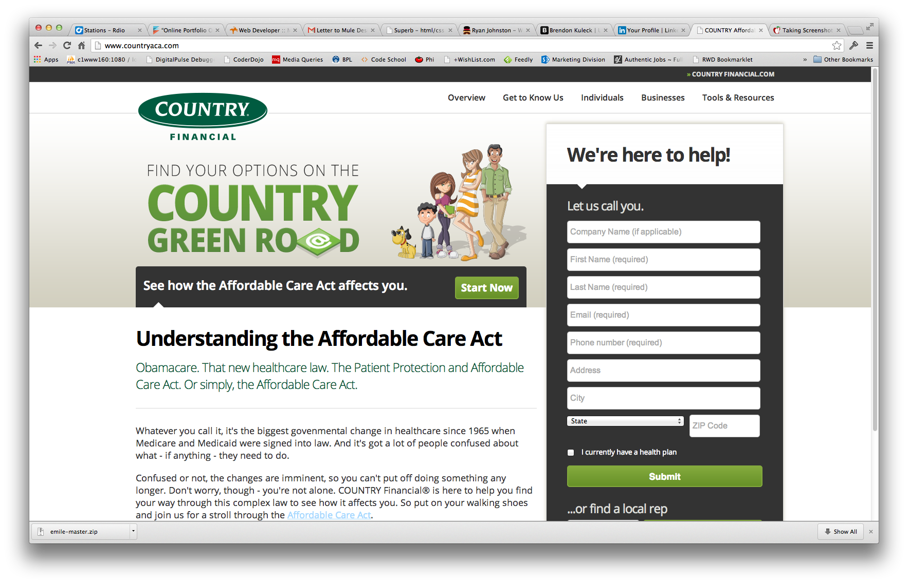

Business Retirement Solutions
url: countryretirementplans.com
type: website, responsive
technologies: html, css, sass, php, javascript, wordpress, modernizr, jquery, polyfills
description: Lead developer on COUNTRY's first responsive web design project. I worked with designers and usability folks to develop a responsive website tailored to educating potential clients on the retirement services that COUNTRY Financial has to offer. This website was built with WordPress and responsive design methodologies.
View Project

Reading Time Pies (work in progress)
url: johnstonianera.com/readingpie
type: interactive web application using oAuth with Readmill API
technologies: html, css, php, javascript, oAuth, Readmill API, json
description: Allows a Readmill user view their reading statistics by viewing their reading times in a pie chart. Each book is divided into a pie slice to show the percentage of total reading time for each book. The user is able to drill down into each book in their library to see more details about the reading statistics for each given book. Also displays highlights for each book the user had read. This is a work in progress.
View Project
Affordable Healthcare Act
urls: countryaca.com, countryaca.com/interactive
type: responsive website, javascript interactive
technologies: html, css, sass, php, javascript, jquery, wordpress, modernizr, polyfills
description: Lead Developer on COUNTRY Financial's second responsive design web project. I also created the COUNTRY Green Road javascript interactive that helps potential clients navigate Affordable Care Act program and decide if it is the right health care option.
View Project
COUNTRY Financial.com Mobile Website
url: countryfinancial.com/mobile
type: mobile website
technologies: html, css, jquery, java
description: Lead developer in converting countryfinancial.com to a mobile version. Used jQuery Mobile for the framework. It was originally a sub-domain, but now is part of the main website. The mobile version of the site will load based on browser/device detection.
View Project
Simply Drive
url: simplydrive.com/mobile/, lesson6.php
type: website, mobile website, flash interactive
technologies: html, css, javascript, flash
description: Website created to provide information to students and parents about driving discounts teens can earn by following the Simply Drive program. The website also educates teens about the dangers of driving. The website was then converted to a custom mobile website. I also developed the flash interactive game that helps teach teens the dangers of distractions while driving.
View Project
Spin to Win
url: spin-to-win
type: interactive prize game
techonologies: html, css, php, javascript, flash, mysql, ajax
description: A lottery game created for the Road Trips and Guitar Picks campaign. A user logged in to the microsite each day and played the game to try and win a variety of RTGP products. The game was originally develped in Flash (ActionScript 3) and later converted to an HTML5/javascript game.
View Project
Sound Check
url: link needed here
type: game
technologies: html, flash actionscript 3
description: memory game (like simon) with increasing levels of difficulty. Players get more points with the highest level they achieve. Built in Flash ActionScript 3
View Project